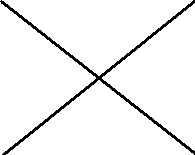
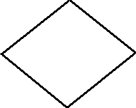
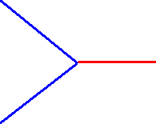

Image1.Canvas.FillRectangle(Image1.ClientRect);
Podrobnejšie tento príkaz bude popísanı v èasti Kreslenie plôch.
Keï teraz pustíme aplikáciu vidíme objekt Image1 ako biely obdå�nik polo�enı na Forme.

Polohu bodu v Image1 mo�no zadáva� pomocou dvojíc [x,y] kde x udáva vodorovnú vzdialenos� bodu od ¾avého okraja Image1.
a y udáva zvislú vzdialenos� od horného okraja Image1
Ak chceme meni� farbu za behu programu, mô�eme pou�i� nasledovné postupy:
- Vlastnosti Color priradíme slovné oznaèenie farby (napr. clred)
- Vlastnosti Color priradíme èíselné oznaèenie farby - $00bbggrr, ide o štvoricu bajtov
- Vlastnosti Color priradíme funkciu RGB(r,g,b), kde r,g,b sú èísla 0..255
- Pou�ijeme objekt ColorBox, kde si u�ívate¾ mô�e vybra� farbu, vybraná farba je vo vlastnosti Selected
- Pou�ijeme objekt ColorDialog, zvolená farba je vo vlastnosti Color
- Pou�ijeme 3 objekty ScrollBar, na ka�dom necháme u�ívate¾a, aby nastavil jas farby a pomocou RGB vytvoríme vıslednú farbu.
- Pen.Color
- farba èiary. Farbu mo�no zada�:
- èíslom - $bbggrr, kde bb - mno�stvo modrej, gg - mno�stvo zelenej, rr - mno�stvo èervenej
- menom - napr clYellow
- RGB(0..255,0..255, 0..255)
- Pen.Width
- hrúbka èiary. Ak chceme èiarkované èiary musíme da� hrúbku 1.
- Pen.Style
- zvolíme tvar èiary (len pre hrúbku 1)
- psSolid - plná èiara.
- psDash - èiarkovaná.
- psDot - bodkovaná.
- psDashDot - bodko-èiarkovana.
- psDashDotDot - bodko-bodko-èiarkovana.
- psClear - �iadna èiara.
- Pen.Mode
- zvolíme spôsob polo�enia èiary na plochu. Implicitne je pmCopy - zvolenou farbou nama¾uje.
Pou�ívame napr. pri "jednoduchej" animácii, èiaru polo�íme v re�ime not (alebo xor), kedy
opätovné kreslenie èiary èiaru zotrie ako undo.
- pmBlack Always black
- pmWhite Always white
- pmNop Unchanged
- pmNot Inverse of canvas background color
- pmCopy Pen color specified in Color property
- pmNotCopy Inverse of pen color
- pmMergePenNot Combination of pen color and inverse of canvas background
- pmMaskPenNot Combination of colors common to both pen and inverse of canvas background.
- pmMergeNotPen Combination of canvas background color and inverse of pen color
- pmMaskNotPen Combination of colors common to both canvas background and inverse of pen
- pmMerge Combination of pen color and canvas background color
- pmNotMerge Inverse of pmMerge: combination of pen color and canvas background color
- pmMask Combination of colors common to both pen and canvas background
- pmNotMask Inverse of pmMask: combination of colors common to both pen and canvas background
- pmXor Combination of colors in either pen or canvas background, but not both
- pmNotXor Inverse of pmXor: combination of colors in either pen or canvas background, but not both
- LineTo(x1,y1) - spojí aktuálny bod s uvedenım predvolenou èiarou (implicitne tenká súvislá èierna). Tvar èiary urèíme pomocou Pen.Color, Pen.Width, Pen.Style.
- MoveTo(x1,y1) - presunie kurzor bez kreslenia na novú pozíciu.
- Polyline() - na kreslenie lomenej èiary, údaje sú brané z pola - pozri help
- Rectangle(x1,y1,x2,y2) - orámuje obdå�nik predpísanou èiarou
- RoundRect(X1, Y1, X2, Y2, X3, Y3) - nakreslí obdå�nik so zaoblenımi rohmi
x3 - šírka elipsy
y3 - vıška elipsy
Image1.Canvas.Brush.style:=BsClear;
ak chceme opätovne zapnú� vykreslovanie plochy (napríklad chceme zotrie� Image1) vlo�íme
Image1.Canvas.Brush.style:=BsSolid;
|
| 1. Vytvor nasledovné obrázky
   |
| 2. Naprogramuj
kreslenie myšou animácia - stiahnu� hra s farbami - stiahnu� |
Image1.Cancas.Brush.Style:=bsClear;
- Ellipse(x1,y1,x2,y2)
- - vykreslí kruh (kru�nicu) alebo elipsu
- Arc(x1,y1,x2,y2,x3,y3,x4,y4)
- - vykreslí èas� kru�nice- elipsy
x1,y1,x2,y2 - súradnice rámika pre elipsu
x3,y3 - prieseèníkom polpriamky stredu elipsy a [x3,z3] s elipsou získame štartovı bod
x4,y4 - prieseèníkom polpriamky stredu elipsy a [x4,z4] s elipsou získame koncovı bod
(tento príkaz nekreslí plochu) - Arc(X, Y, W, H, Angle, AngleLength)
-
x,y - súradnice ¾avého horného bodu rámika
w,h - rozmery rámika
Angle, AngleLength - štartovı a koncovı uhol - v 1/16 stupòa - Chord(x1,y1,x2,y2,x3,y3,x4,y4)
- - vykreslí èas� kru�nice- elipsy a spojí úseèkou
x1,y1,x2,y2 - súradnice rámika pre elipsu
x3,y3 - prieseèníkom polpriamky stredu elipsy a [x3,z3] s elipsou získame štartovı bod
x4,y4 - prieseèníkom polpriamky stredu elipsy a [x4,z4] s elipsou získame koncovı bod - Chord(X, Y, W, H, Angle, AngleLength)
- Pie(x1,y1,x2,y2,x3,y3,x4,y4)
- - vykreslí vısek kru�nice- elipsy a spojí úseèkou
x1,y1,x2,y2 - súradnice rámika pre elipsu
x3,y3 - prieseèníkom polpriamky stredu elipsy a [x3,z3] s elipsou získame štartovı bod
x4,y4 - prieseèníkom polpriamky stredu elipsy a [x4,z4] s elipsou získame koncovı bod - Pie(X, Y, W, H, Angle, AngleLength)
- Bitmap
- - na vlozenie obrazka do pozadia (bude pris� neskôr)
- Color
- - farba vıplne, máme k dispozícii tie iste mo�nosti ako pri èiarach
- Style
- bsSolid-plné, bsCross-šachovnicovo, bsClear-�iadne, bsDiagCross-šikmá šachovnica, bsBDiagonal-šikmo/, bsFDiagonal-šikmo\, bsHorizontal-vodorovne, bsVertical-zvislo, bsDense1, bsDense2, bsDense3, bsDense4, bsDense5, bsDense6, bsDense7-šeï
- Rectangle(x1,y1,x2,y2), Rectangle(Rect:Trect) Trect-je záznam buï štvorice èísel, alebo dvojice bodov (Pomocou funkcie Rect(a,b,c,d))
- FillRect(Rect:Trect) - obdå�nik bez ohranièenia
- Ellipse(x1,y1,x2,y2) - vykreslí kruh (kru�nicu) alebo elipsu
- Arc, Chord, Pie - èasti elipsy - kru�nice
- CopyRect(const Dest: TRect; Canvas: TCanvas; const Source: TRect)
- pou�íva sa na:
- kopírovanie obdå�nikovej oblasti z jedného canvasu na inı
- odlo�enie obdå�nikovej oblasti do premennej
- vrátenie obdå�nikovej oblasti z premennej do canvasu
|
| 1. Vytvor nasledovné programy
skladanie na seba kolmıch kmitov |
- TextOut(x,y:integer; text:string) - vypíše na udané miesto text
- TextHeight(const Text: String): Integer - Zistí vıšku textu v bodoch
- TextWidth(const Text: String): Integer - Zistí šírku textu v bodoch
- TextRect(Rect: TRect; X, Y: Integer; Text: String;) - Umo�ní zápis textu do vymedzenej oblasti
- Nama¾uj kovovú rúru
- Nama¾uj snehuliaka
- Nama¾uj kvietok s 8-mimi èervenımi lupeòmi
- Namaluj korálkovı náhrdelník, na modrej niti v tvare elipsy budú modré korálky
- Namaluj slneènú oblohu s nieko¾kımi obláèikmi
- Nama¾uj vyšrafované ozubené koleso o polomere r a poète zubov z, vıške zubov vz.
Pomôcka:Súradnice bodov základne rovnostr. trojuholníkov získame pomocou vz�ahov:
xi=xs+r*cos(2*pi/z*i)
yi=ys+r*sin(2*pi/z*i)
Súradnice vrcholov budú na kru�nici o polomere (r+vz) a poèiatoènı uhol bude posunutı o (pi/z) - Namaluj nasledovnı obrázok na modrom podklade

- Namaluj kocku, prièom farby stien sú rôzne a uhly otoèenia sa naèítajú z klávesnice
- Namaluj kocku, pod¾a predošlého príkladu a cez polovice hlán "odre�" jeden roh kocky, rovinu rezu vyšrafuj
- Nama¾uj tvár s oèami a ústami. Na stlaèenie kláves sa postave pohıbu oèi, uká�u zuby, pohnú uši
- Naprogramuj pohybujúcu sa �ltú loptu odrá�ajúcu sa od stien obrazovky
- Naprogramuj hru pre dvoch hráèov, ktorı sa striedajú pri klávesnici a sna�ia sa pomocou dela súpera zneškodni� Na mieste dopadu náboja sa najprv zobrazí malı �ltı kruh potom väèší èervenı a napokon ešte väèší farmou pozadia. Ka�dı hráè volí uhol a rıchlos� strely.
- Naprogramuj grafickı editor, ktorı dovolí klás� na plochu grafické objekty, tieto objekty evidova� v poli, editova� objety, pridáva�, odstraòova� a zapisova� a èíta� z disku.
- Naprogramuj pohybujúce sa autíèka na kri�ovatke riadenej svetelnımi semaformi, autíèka prichádyajú náhodne z rôznych smerov.